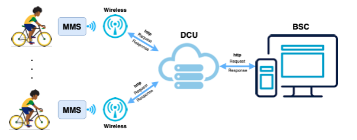
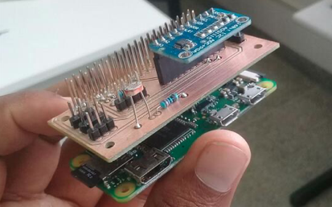
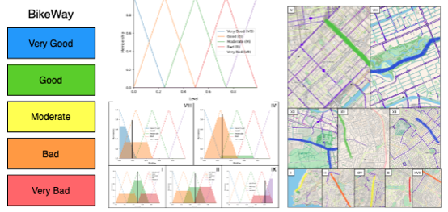

Membros
Coordenador
Prof. Dr. Daniel G. Costa, DTEC-UEFS
Pesquisadores
Prof. Dr. Anfranserai Dias, DTEC-UEFS
Franklin Oliveira, PGCC-UEFS
Mestrando
Dilan Nery, PGCC-UEFS
Mestrando
Glauber Santana, UEFS
Graduando
Monitoramento Ambiental Utilizando Bicicletas
O uso de bicicletas como meio de transporte alternativo tem sido estimulado nas grandes cidades não apenas como alternativa aos graves problemas com mobilidade urbana e poluição, mas também como forma de estimular hábitos de vida mais saudáveis. Contudo, não há, na maioria das vezes, um planejamento adequado para a implantação de ciclovias e ciclofaixas quando consideramos as condições ambientais externas que afetam a saúde e segurança dos ciclistas.
Este projeto destina-se a criar suporte tecnológico para o monitoramento de diversas condições ambientais, adversas ou não, em ciclovias presentes em áreas urbanas, considerando tanto ciclovias demarcadas quanto ruas usadas por ciclistas. As variáveis a serem monitoradas são: temperatura, humidade, pressão atmosférica, luminosidade, radiação UV, poluição do ar e poluição sonora.
Através do monitoramento contínuo e distribuído, será possível processar e disponibilizar diariamente informações a cerca da qualidade das vias percorridas por ciclistas, potencialmente auxiliando os órgãos públicos na manutenção e implantação de novas ciclovias e ciclofaixas.
Mestrando
Mestrando
Graduando
Criação de um sistema de monitoramento IoT em três camadas, contemplando 1) unidades de monitoramento acopladas à bicicletas (MMS), 2) uma estacão intermediária de processamento (DCU) e um conjunto de aplicações para visualização dos dados coletados (BSC). Esse sistema é construído seguindo o princípio monitor-store-and-transmit, com as bicicletas monitorando o ambiente e armazenando localmente os dados para transmissão apenas a partir de uma estação base cadastrada para cada bicicleta. A comunicação com a estação utiliza a tecnologia Wi-Fi, reduzindo bastante o custo de operação do sistema.
Como a qualidade do sistema de monitoramento depende da quantidade de bicicletas utilizadas, o hardware utilizado deve ser de baixo custo e consumir pouca energia. Os primeiros protótipos são baseados no Raspberry Pi Zero WH e em sensores baratos, conectados à uma bateria.
Uma métrica de qualidade foi criada para monitorar a qualidade de ciclovias de acordo com informações ambientais. Essa métrica, chamada de BikeWay, associa informações de dois diferentes grupos de informação: dados de sensores e dados estatísticos das vias. O valor encontrado para cada ciclovia é então classificado em um de cinco níveis.
A partir da utilização de regras de processamento Fuzzy, qualquer ciclovia do mundo pode ser classificada com um valor de qualidade BikeWay, com “azul" sendo o melhor valor e “vermelho" sendo o pior valor.